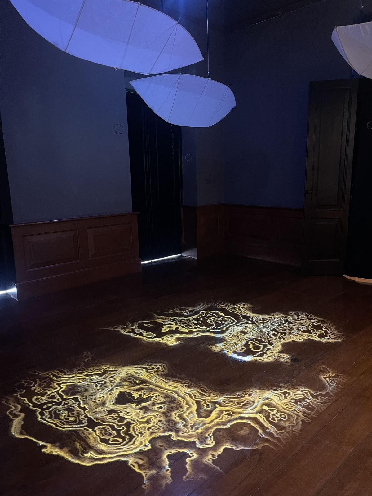

An exhibition that reads two cities, Chiang Mai and Kashima in Japan, as layered contours. Each era of change is drawn over the last, and beneath the visible map lie hidden structures of culture, politics, history, and daily life. LIVING CONTOUR traces both cities' growth through their maps, festivals, traditions, and people, across three sections: Trace of Contour, Living Within Contour, and BLANK! Culture. A collaboration between Saga University (Japan) and Chiang Mai University, supported by CMU's Big Bang International Projects.